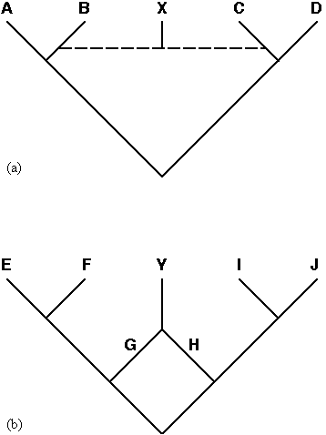

Division II.
Rules
Chapter I.
Taxa
Article 1.
The Nature of Taxa
1.1.
The groups of organisms whose names are governed by this code are called taxa (singular: taxon). Taxa may be clades or species, but only clade names are governed by this code.
Article 2.
Clades
2.1.
In this code, a clade is an ancestor (an organism, population, or species) and all of its descendants.
Note 2.1.1.
Every individual organism (on Earth) belongs to at least one clade (i.e., the clade comprising all extant and extinct organisms, assuming that they share a single origin). Each organism also belongs to a number of nested clades (though the ancestor of the clade comprising all life—again assuming a single origin—does not belong to any other clade).
Note 2.1.2.
It is not necessary that all clades be named.
Note 2.1.3.
Clades are often either nested or mutually exclusive; however, phenomena such as speciation via hybridization, species fusion, and symbiogenesis can result in clades that are partially overlapping (see Figure below).

Speciation via hybridization (a) and species fusion (b) can result in clades that are partially overlapping. In (a), the origin of species X via hybridization (represented by the dashed line) between members of species B and C results in partial overlap between the most inclusive clade containing A but not D (or the least inclusive clade containing both A and B), which is composed of A, B and X, and the most inclusive clade containing D but not A (or the least inclusive clade containing C and D), which is composed of C, D, and X, in that X is part of both clades. In (b), fusion of species G and H to form species Y (with the two parent species disappearing in the process) results in partial overlap between the most inclusive clade containing E but not J (or the least inclusive clade containing both E and G), which is composed of E, F, G, and Y, and the most inclusive clade containing J but not E (or the least inclusive clade containing both H and J), which is composed of H, I, J, and Y, in that Y is part of both clades.
2.2.
In this code, the following categories of clades are recognized based on how they are conceptualized with respect to the components of a phylogenetic tree. This list is not necessarily exhaustive.
- A node-based clade is a clade originating with a particular node on a phylogenetic tree, where the node represents a lineage at the instant of a splitting event.
- A branch-based clade is a clade originating with a particular branch (internode) on a phylogenetic tree, where the branch represents a lineage between two splitting events.
- An apomorphy-based clade is a clade originating with the ancestor in which a particular derived character state (apomorphy) originated.
- A crown clade is a node-based clade originating with the most recent common ancestor of two or more extant species (or organisms).
- A total clade is a branch-based clade composed of a crown clade and all organisms (and species) that share a more recent common ancestor with that crown clade than with any extant organisms or species that are not members of that crown clade.
Note 2.2.1.
Here and elsewhere in this code, "phylogenetic tree" is used loosely to include any directed graph, specifically those with additional connections representing phenomena such as hybridization (see Note 2.1.3).
Article 3.
Hierarchy and Rank
3.1.
The system of nomenclature described in this code is independent of categorical rank. Although clades are hierarchically related, and therefore intrinsically ranked in the sense that some are more inclusive than others, assignment of categorical ranks (e.g., genus, family, etc.) is not part of the formal naming process and has no bearing on the spelling or application of clade names.
Example 1.
If the name Iguanidae were defined as referring to a clade originally ranked as a family, and if that clade were later ranked as a subfamily and (at the same time) a more inclusive clade ranked as a family, the reference of the name Iguanidae would not change to the more inclusive clade, nor would the spelling of that name change (i.e., to Iguaninae) to reflect the new rank of the clade to which it refers.
Note 3.1.1.
In this code, the terms "species" and "clade" refer to different kinds of biological entities, not ranks.
Note 3.1.2.
This code does not prohibit, discourage, encourage, or require the use of taxonomic ranks.